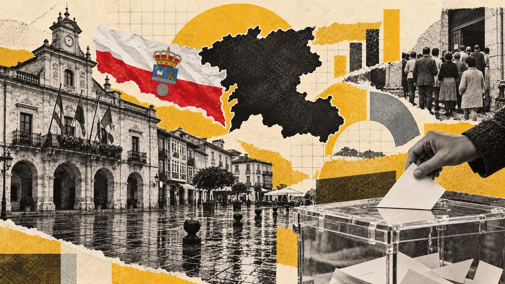

Actualidad · Las comunidades en las urnas · Cantabria
El PP ha ganado nueve de las once autonómicas en Cantabria, pero Revilla, del PRC, la presidió dieciséis años
Revilla llegó al Gobierno en 2003 desde el tercer puesto, con el apoyo del PSOE, y solo ganó unas elecciones, las de 2019. En las generales, el PP ha sido el más votado diez veces, también en 2004 y 2008. Y Cantabria vota más que la media española.
Por Nacho G. del Álamo ·

El PP ha sido el partido más votado en nueve de las once elecciones al Parlamento de Cantabria. Pero durante dieciséis años, de 2003 a 2011 y de 2015 a 2023, el presidente fue Miguel Ángel Revilla, del Partido Regionalista de Cantabria (PRC), que solo ganó unas autonómicas, las de 2019. En 2003 llegó al cargo con el tercer grupo de la cámara, gracias a un pacto con el PSOE.
Antes hubo años de inestabilidad: un presidente elegido en las listas de AP que acabó enfrentado a su partido, una moción de censura y una condena del Tribunal Supremo. En las generales, en cambio, Cantabria ha sido mucho más previsible: el PP ha sido el más votado en diez de las dieciséis, también en 2004 y 2008, cuando ganaba Zapatero. Y es una de las comunidades que más votan.
Este reportaje recorre esa historia con los resultados de las once autonómicas, de 1983 a 2023, y de las dieciséis generales desde 1977, municipio a municipio.
Los años de Hormaechea
El Estatuto de Autonomía de Cantabria se aprobó el 30 de diciembre de 1981, y el primer parlamento, entonces llamado Asamblea Regional, se votó en mayo de 1983. La Coalición Popular sacó 18 de los 35 escaños, la mayoría absoluta, y José Antonio Rodríguez fue investido con sus votos. En 1984 le relevó Ángel Díaz de Entresotos, del mismo grupo.
Ver los datos en tabla
En 1987, con 39 diputados en juego, AP se quedó en 19, a uno de la mayoría, y fue investido Juan Hormaechea, que se había presentado como independiente en las listas de AP. La legislatura fue muy agitada, según la crónica de aquellas elecciones: en 1989 el PP pidió su dimisión, Hormaechea siguió con un gobierno de independientes y en diciembre de 1990 una moción de censura del PP, el PSOE, el PRC y el CDS le sustituyó por el socialista Jaime Blanco.
Hormaechea volvió en 1991 con su propio partido, la Unión para el Progreso de Cantabria (UPCA). El PSOE fue el más votado, con 16 escaños, pero UPCA sacó 15 y, con el apoyo de los 6 del PP, Hormaechea fue investido de nuevo. En noviembre de 1994 una sentencia firme del Tribunal Supremo le condenó a prisión e inhabilitación; dimitió, pero ningún otro candidato consiguió la mayoría y siguió en funciones hasta julio de 1995, según la crónica de 1991. Uno de los candidatos que lo intentó, en diciembre de 1994, fue Revilla, con el apoyo del PSOE, según Historia Electoral.
| Presidente | Partido | Mandato |
|---|---|---|
| José Antonio Rodríguez | UCD, luego Coalición Popular | 1982–1984 |
| Ángel Díaz de Entresotos | AP | 1984–1987 |
| Juan Hormaechea | Independiente en las listas de AP | 1987–1990 |
| Jaime Blanco | PSOE | 1990–1991 |
| Juan Hormaechea | UPCA | 1991–1995 |
| José Joaquín Martínez Sieso | PP | 1995–2003 |
| Miguel Ángel Revilla | PRC | 2003–2011 |
| Ignacio Diego | PP | 2011–2015 |
| Miguel Ángel Revilla | PRC | 2015–2023 |
| María José Sáenz de Buruaga | PP | 2023–hoy |
Presidentes de Cantabria desde 1982. José Antonio Rodríguez presidió el ente preautonómico y, tras las elecciones de 1983, el primer Gobierno autonómico. Fuente: Historia Electoral.
Revilla: presidente desde el tercer puesto
En 1995 el PP ganó con 13 escaños y José Joaquín Martínez Sieso fue investido con el apoyo del PRC, que tenía 6, según la crónica de aquellas elecciones. Repitieron la fórmula en 1999. En 2003 el PP volvió a ser el más votado, con el 43,4% y 18 escaños, y el PRC subió a 8. Revilla exigió la presidencia para renovar el pacto; el PP se negó y el PSOE, segundo con 13 diputados, aceptó, según la crónica de 2003. Revilla fue investido con 21 votos, al frente del partido con menos escaños de la cámara.
Desde entonces el PRC no dejó de crecer: 12 escaños en 2007, 2011 y 2015, y 14 en 2019. Con el PSOE gobernó hasta 2011, cuando el PP de Ignacio Diego logró la mayoría absoluta con 20 diputados. En 2015, con el PP primero otra vez pero sin mayoría, regionalistas y socialistas volvieron a sumar. Y en 2019 el PRC fue, por primera vez, el más votado, con el 37,6%. El jurista Luis Martín Rebollo, de la Universidad de Cantabria, lo describió así:
«convirtiéndose así, por vez primera, en el partido más votado de la Comunidad, con 122.000 votos, 45.000 más que el segundo, el PP, que había sido tradicionalmente hasta el momento el partido ganador»
2023: el PP gobierna solo y en minoría
Cuatro años después, el PRC bajó de 14 a 8 escaños, los mismos que el PSOE, y el PP de María José Sáenz de Buruaga ganó con 15, a tres de la mayoría absoluta. Buruaga fue investida el 3 de julio de 2023, en segunda votación, con los votos de su grupo y la abstención del PRC, según la crónica de aquellas elecciones. La jurista Ana Sánchez Lamelas, de la Universidad de Cantabria, explicaba lo que salía de aquel resultado:
«un gobierno del PP sin mayoría absoluta y sin pactos de gobierno ni de gobernabilidad, lo que le exige alcanzar pactos concretos en el Parlamento a la hora de adoptar las reformas legales que pretende»
Esa debilidad se vio en noviembre de 2025, cuando PRC, PSOE y Vox devolvieron al Gobierno el proyecto de presupuestos para 2026, según elDiario.es. Tres días después, Buruaga criticó a la oposición:
«Los cántabros quieren soluciones, respuestas y políticas útiles para resolver sus problemas, no tacticismo electoral»
Las cuentas salieron adelante en abril de 2026, con los votos del PP y del PRC, que habían firmado un preacuerdo en marzo, según Redacción Médica. Las próximas autonómicas tocan en mayo de 2027.
En las generales: el PP, diez de dieciséis
En las generales, Cantabria votó a UCD en 1977 y 1979 y al PSOE en 1982, 1986 y 1989. Desde 1993 el PP ha sido el más votado en todas menos una, la de abril de 2019. Y lo fue también cuando España votaba al PSOE: en 1993, por menos de una décima (37,6% frente a 37,5%), en 2004, en 2008 y en noviembre de 2019. En 2000 llegó al 58,5%, su mejor resultado.
Ver los datos en tabla
Desde 1982, el PP cántabro ha quedado por encima de su media en España en todas las generales. El PRC, que va en «Otras listas», se presentó por primera vez a las generales en abril de 2019 y logró un diputado, que repitió en noviembre con más votos, según Martín Rebollo. En 2023 no se presentó.
Ver los datos en tabla
Ver los datos en tabla
Santander, con 135.000 electores, votó al PSOE en 1982 y 1986 y desde 1989 ha votado al PP en todas las generales menos en abril de 2019. La izquierda es más fuerte en la cuenca del Besaya: Torrelavega ha votado al PSOE en 11 de las 16 generales, y Los Corrales de Buelna, en 12.
Ver los datos en tabla
El mapa municipal confirma el dominio del PP. En 1977 UCD ganó en 90 de los 102 municipios y el PSOE, en 12, entre ellos Torrelavega, Castro-Urdiales y Los Corrales de Buelna. En 2000 y en 2011 el PP fue el más votado en 100 de los 102. Las dos elecciones de 2019 rompieron ese mapa: en abril el PSOE ganó en 40 municipios, Santander incluido, y el PRC en 17; en noviembre, el PRC fue el más votado en 31, sobre todo pueblos pequeños de los valles del interior. En 2023 el PP volvió a ganar en 85 y el PSOE, en 17, repartidos entre el eje del Besaya, de Torrelavega a Los Corrales, el oriente, como Castro-Urdiales, y el extremo occidental.
Ninguno de los 102 municipios cántabros ha votado al mismo partido en las 16 generales.
Votar más que la media
Cantabria vota más que el conjunto de España: sin contar el voto exterior, su participación quedó por encima de la media en las 16 generales. En 2023 fue la más alta de todas las comunidades, el 75,4%, frente al 70,4% del país.
Ver los datos en tabla
Qué mirar el 29N
Cantabria elige 5 diputados en una sola circunscripción. En 2023 fueron 2 para el PP, 2 para el PSOE y 1 para Vox, según los resultados oficiales. El 29 de noviembre dirá si el PP mantiene la ventaja de 2023, cuando sacó nueve puntos más que en el conjunto de España, y si Cantabria vuelve a ser la comunidad que más vota.
Método y fuentes
- Qué se compara
- Las 11 elecciones al Parlamento de Cantabria (1983-2023) y las 16 generales (1977-2023) en Cantabria, por municipio.
- Límites
- Las generales se cuentan sin voto exterior (CERA), así que la participación sale algo por encima de la oficial. Hasta 2000 el ganador de cada provincia y municipio es la candidatura más votada de todas; desde 2004, la familia de partidos más votada (los regionalistas van en «Otras listas»). La familia PCE / IU / Podemos / Sumar suma listas que en 2015 y 2019 se presentaron por separado en algunas comunidades (Podemos, IU, Compromís, Más País): en el gráfico de voto su línea es la suma, pero el ganador de cada provincia, ciudad y municipio de esos años se ha calculado lista a lista con los datos por mesa de Interior (vía pollspaindata). En 1982 faltan en el fichero de Interior unos 139 municipios de toda España. Los escaños autonómicos son los de Historia Electoral, comprobados con Wikipedia en las elecciones que se citan en el texto.
- Cómo se calcula
- Porcentajes sobre votos a candidaturas, salvo la participación, que es sobre el censo. Cifras reproducibles con los scripts del expediente de la pieza. Metodología del Atlas
- Fuentes
- Ministerio del Interior (Infoelectoral), resultados de las elecciones generales desde 1977 por municipio y por mesa; de 1986 a 2003, vía pollspaindata. Sin voto exterior (CERA)
- pollspaindata (datos de Interior por mesa): votos de cada candidatura en las generales de 2015, 2019 y 2023, para el ganador lista a lista
- Historia Electoral, elecciones autonómicas en Cantabria (escaños, votos e investiduras)
- Luis Martín Rebollo, «Cantabria», Informe Comunidades Autónomas 2019, Instituto de Derecho Público (IDP Barcelona)
- Ana Sánchez Lamelas, «Cantabria», Informe Comunidades Autónomas 2023, IDP Barcelona
- elDiario.es, «La oposición en Cantabria tumba el Presupuesto del PP…» (24-11-2025)
- elDiario.es / Europa Press, «Buruaga: “Habrá otro presupuesto si alguien hace propuestas para que lo haya”» (27-11-2025)
- Redacción Médica, aprobación del presupuesto de Cantabria para 2026 (27-4-2026)
- Wikipedia, Elecciones a la Asamblea Regional de Cantabria de 1987
- Wikipedia, Elecciones a la Asamblea Regional de Cantabria de 1991
- Wikipedia, Elecciones a la Asamblea Regional de Cantabria de 1995
- Wikipedia, Elecciones al Parlamento de Cantabria de 2003
- Wikipedia, Elecciones al Parlamento de Cantabria de 2023
- Wikipedia, Elecciones generales de España de 2023 (escaños por circunscripción)
- Autoría
- Nacho G. del Álamo
- Revisión de datos y texto
- Nacho G. del Álamo, 9 de octubre de 2026
- Publicado · actualizado
- 9 de octubre de 2026 · 9 de octubre de 2026
- Correcciones
- Ninguna.
Serie «Las comunidades en las urnas»: 19 piezas
- El PSOE gobernó Andalucía 36 años seguidos; desde 2019 la Junta es del PP, que ahora gobierna con Vox dentro
- Huesca y Zaragoza han votado al ganador de España en las 16 generales; en sus Cortes nadie ha tenido nunca mayoría absoluta
- El PSOE ha gobernado Asturias en diez de sus doce legislaturas; en las generales, el PP ganó allí en 2004 aunque España votó a Zapatero
- El PP ha ganado diez de las once autonómicas en Baleares, pero entre 1999 y 2015 el Govern cambió de manos en cada elección
- El PSOE ha ganado siete de las once autonómicas canarias, pero solo ha gobernado tres legislaturas
- Estás aquíEl PP ha ganado nueve de las once autonómicas en Cantabria, pero Revilla, del PRC, la presidió dieciséis años
- El PSOE ha gobernado Castilla-La Mancha en diez de sus once legislaturas; en las generales, el PP ganó allí incluso en 2004 y 2008, con Zapatero
- El PP gobierna Castilla y León desde 1987 y ha ganado allí 11 de las 16 generales; el PSOE ganó las autonómicas de 2019 y no gobernó
- El PSC ha sido el más votado en Cataluña en 11 de las 16 generales; la Generalitat la presidió CiU 23 años seguidos
- La Comunitat Valenciana votó al PP en las generales de 1993, 2004 y 2008, cuando España eligió al PSOE; en la Generalitat, el PP gobernó 20 años seguidos
- El PSOE ha ganado 11 de las 16 generales en Extremadura y gobernó la Junta nueve legislaturas; en 2025 cayó al 25,8%
- El PP ha ganado las doce elecciones gallegas y solo perdió la Xunta dos veces; en las generales, el PSOE ganó allí una sola vez, en 2019
- El PP gobierna Madrid desde 1995, también tras perder en 2019; Ayuso pasó de 30 a 70 escaños en cuatro años
- Murcia es la única provincia donde Vox ha ganado unas generales; el PP la gobierna desde 1995 y ahora depende de Vox
- UPN ha sido la lista más votada en las nueve últimas elecciones navarras, pero desde 2015 gobiernan otros
- El PNV ha sido el más votado en las trece elecciones vascas; en las generales perdió el primer puesto cinco veces, ante el PSE y Podemos
- La Rioja ha votado más que la media de España en las 16 generales, y el PP la gobernó 24 años seguidos
- Ceuta es uno de los dos sitios donde Vox ha ganado unas generales; en su Asamblea, Vivas gobierna desde 2001 tras dos mociones de censura
- Melilla tuvo cuatro años un presidente con un solo escaño de 25; en las generales vota al PP desde 1996 y en 2019 rozó el cambio
Sigue leyendo
- Camino al 29N · EspañaVox saca casi lo mismo donde uno de cada tres vecinos nació fuera que donde casi nadie lo hizo
- Camino al 29N · EspañaEl espacio a la izquierda del PSOE fue el más votado en 9.810 secciones en 2015; en 2023, en 182
- Camino al 29N · MadridEn Madrid, el PSOE saca diez puntos más cuando se vota al Gobierno que cuando se vota al alcalde
- ActualidadTodas las piezas de actualidad
- AtlasAtlas de las anomalías electorales